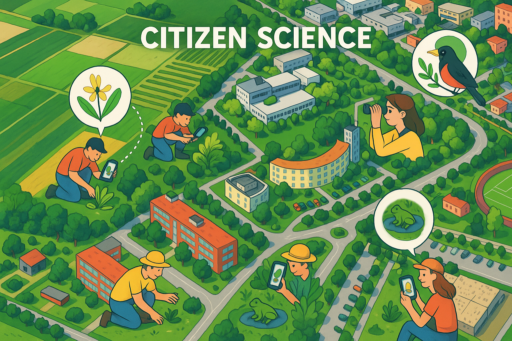
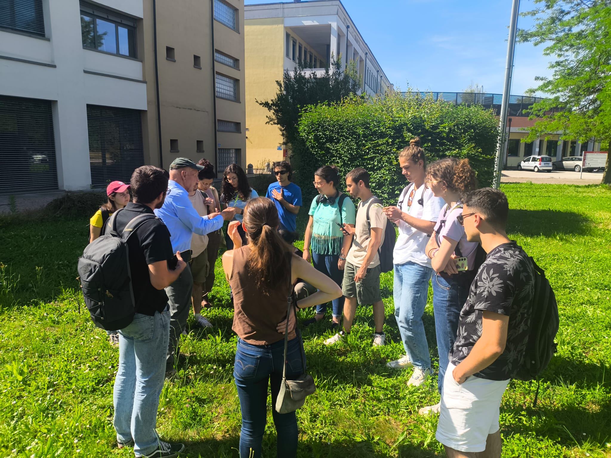
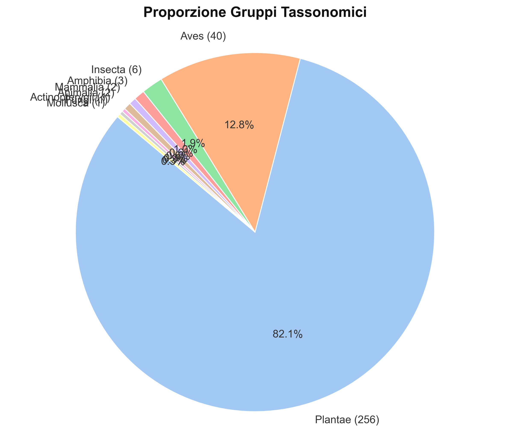
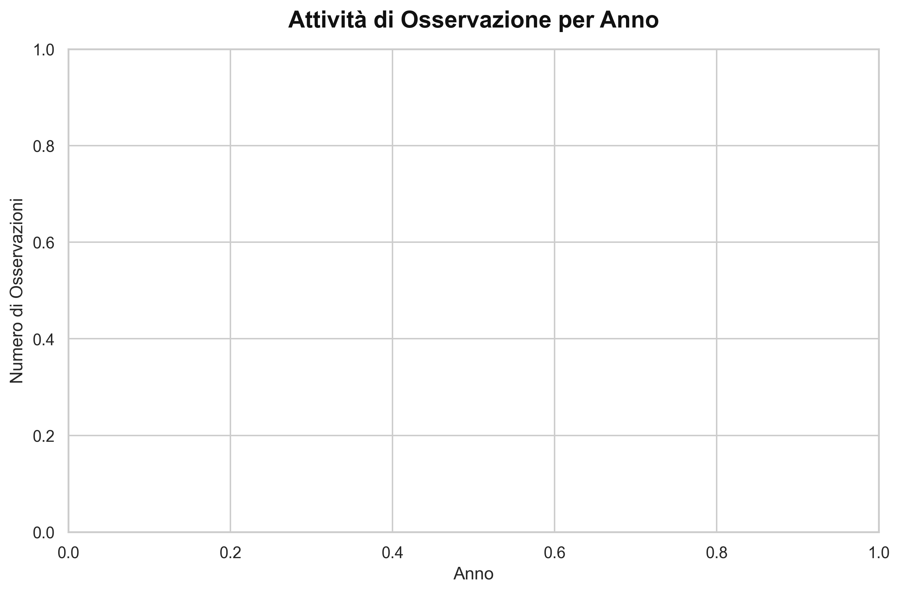
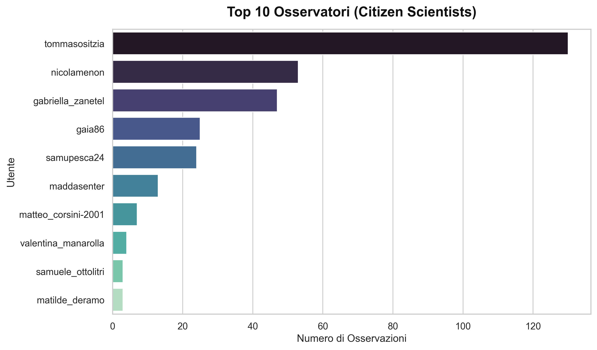

Citizen Science at Agripolis Campus
1. Innovation and Open Science contribution
The innovative project “Living lab: innovation and citizen science for environmental impact assessment” aims to connect biodiversity and urban areas through an Open Science approach. Its aims to transform the Agripolis campus of the Università degli Studi di Padova into an open-air laboratory. The project combines citizen science, everyday technologies, and expert knowledge, focusing on urban biodiversity to raise awareness about the significant ecological value of anthropized areas. Students collaborated with experts, researchers, and professors to collect and investigate ecological data, making the project a clear example of open science, where knowledge production get out from laboratories, becoming an inclusive, collaborative and transparent process. The innovative element of the project was the implementation of accessible technologies as photo cameras, audio, smartphone apps and GPS, allowing broad participation in biodiversity monitoring.
Data collection was conducted by participants under experts’ guidance (flora: Roberto Rizzieri Masin; herpetofauna: Giovanni Bombieri; avifauna: Andrea Favaretto; environmental impact assessment Andrea Rizzi). Moreover, the species identification was supported by the citizen science platform iNaturalist. The collected data were directly uploaded to the "Living Lab - Campus Agripolis UNIPD" project on iNaturalist. Today, it includes over 310 observations, highlighting the interest from partecipants and species diversity hosted by Agripolis.


Figure 1: Project participants during field activities for identifying the flora of the Agripolis campus, under the guidance of the expert Roberto Rizzieri Masin.
2. Accessibility, reusability, and broader benefits
The project's innovation relies in its continuous updates and contributions from anyone interested, thanks to open access project on the iNaturalist platform. A key strength of the project is its high and free accessibility to contribute. By relying on smartphones, it eliminates technical and economic barriers. Anyone with a smartphone can make a fundamental contribution to studying and deepening knowledge of Agripolis campus flora and fauna.
Open access to collected data ensures reusability, providing valuable information for future analyses and studies. Any institution can replicate the project structure, creating a network of interdisciplinary initiatives that directly involve communities in protecting and maintaining biodiversity in urban areas.
The project's go well beyond institutional boundaries. For the scientific community, it provides additional data for monitoring human-impacted landscapes, offering potential opportunities for future collaborations. For students, it develops technical and methodological skills in environmental impact assessment, data collection, and science communication. For the local area, it raises awareness of the ecological value of university spaces and promotes more responsible use of the campus.
iNaturalist Photo Gallery
Latest high-quality observations from our Citizen Scientists on the field.
Interactive Cartography
Observations Distribution
Use the Layer Control menu on the top right of the map to select specific taxonomic groups. Click on markers to see the original photo taken by the observer.
Observation Density (Heatmap)
This map shows the density of biological observations across the campus.
Biodiversity Statistics
Taxonomic Groups Proportion

Yearly Activity
Frequency of observations recorded over the years.

Top Observers (Citizen Scientists)
The most active participants within the Living Lab Agripolis project.

Methodology and R Script
This "Notebook" illustrates the technical steps used to automatically extract iNaturalist public API data and generate maps using the R programming language.
1. Package Installation and Loading
We start by using pacman to automatically install and load the necessary R libraries for data manipulation and spatial mapping.
# Load libraries safely if(!require("pacman")) { install.packages("pacman") } pacman::p_load( dplyr, rinat, ggplot2, stringr, sf, maptiles, ggspatial, patchwork )
2. Fetching and Cleaning Data
Using the rinat package, we download observations directly from the Living Lab project. We then clean the dataset by removing 'casual' grade observations and those missing species-level identification.
# Import dataset inat_data = get_inat_obs_project("living-lab-campus-agripolis-unipd", type = c("observations", "info"), raw = FALSE) # Clean the observations inat_data_clean <- inat_data %>% filter( quality_grade != "casual", # remove casual observations str_count(taxon.name, "\\w+") > 1 # delete observations at genus level )
3. Spatial Transformation and Mapping
We convert the cleaned data frame into a spatial sf object to map the observations over an Esri World Imagery basemap.
# Create sf object (WGS84) inat_sf <- st_as_sf( inat_data_clean, coords = c("longitude", "latitude"), crs = 4326, remove = FALSE ) # Reproject data as required by maptiles (Web Mercator) inat_sf_web <- st_transform(inat_sf, 3857) # Download the basemap basemap <- get_tiles(inat_sf_web, provider = "Esri.WorldImagery") # Generate spatial distribution map with ggplot2 map_plot = ggplot() + layer_spatial(basemap) + geom_sf(data = inat_sf_web, aes(color = iconic_taxon_name), size = 1.5, alpha = 0.8) + theme_minimal() print(map_plot)
4. Density Heatmap
Finally, we calculate the density of observations using stat_density_2d_filled to visualize the most active areas of the campus.
# Density Heatmap density_plot = ggplot() + layer_spatial(basemap) + stat_density_2d_filled( data = inat_sf_web, aes(x = sf::st_coordinates(inat_sf_web)[, 1], y = sf::st_coordinates(inat_sf_web)[, 2], fill = after_stat(level)), alpha = 0.7, contour_var = "density" ) + scale_fill_viridis_d(option = "magma") print(density_plot)